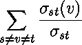
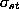
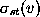
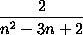
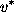
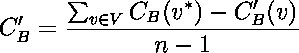
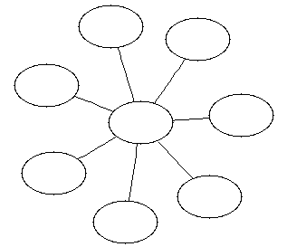

brandes_betweenness_centrality
brandes_betweenness_centrality brandes_betweenness_centrality
brandes_betweenness_centrality
// named parameter versions
template<typename Graph, typename Param, typename Tag, typename Rest>
void
brandes_betweenness_centrality(const Graph& g,
const bgl_named_params<Param,Tag,Rest>& params);
template<typename Graph, typename CentralityMap>
void
brandes_betweenness_centrality(const Graph& g, CentralityMap centrality_map);
template<typename Graph, typename CentralityMap, typename EdgeCentralityMap>
void
brandes_betweenness_centrality(const Graph& g, CentralityMap centrality_map,
EdgeCentralityMap edge_centrality);
// non-named parameter versions
template<typename Graph, typename CentralityMap, typename EdgeCentralityMap,
typename IncomingMap, typename DistanceMap, typename DependencyMap,
typename PathCountMap, typename VertexIndexMap>
void
brandes_betweenness_centrality(const Graph& g, CentralityMap centrality_map,
EdgeCentralityMap edge_centrality,
IncomingMap incoming,
DistanceMap distance, DependencyMap dependency,
PathCountMap path_count,
VertexIndexMap vertex_index);
template<typename Graph, typename CentralityMap, typename EdgeCentralityMap,
typename IncomingMap, typename DistanceMap, typename DependencyMap,
typename PathCountMap, typename VertexIndexMap, typename WeightMap>
void
brandes_betweenness_centrality(const Graph& g, CentralityMap centrality_map,
EdgeCentralityMap edge_centrality,
IncomingMap incoming,
DistanceMap distance, DependencyMap dependency,
PathCountMap path_count,
VertexIndexMap vertex_index,
WeightMap weight_map);
// helper functions
template<typename Graph, typename CentralityMap>
void
relative_betweenness_centrality(const Graph& g, CentralityMap centrality_map);
template<typename Graph, typename CentralityMap>
typename property_traits<CentralityMap>::value_type
central_point_dominance(const Graph& g, CentralityMap centrality_map);
This algorithm [54] computes the betweenness centrality [55,56] of each vertex or each edge in the graph. The betweenness centrality of a vertex v is defined by
,
where  is the number of shortest paths from vertex s to vertex t and  is the number of shortest paths from vertex s to vertex t that pass through vertex v.
The edge betweenness centrality indicates for each edge the betweenness centrality that was contributed to the target(s) of the edge (plural for undirected graphs). Similar to (vertex) betweenness centrality, edge betweenness centrality can be used to determine the edges through which most shortest paths must pass. A single invocation of this algorithm can compute either the vertex or edge centrality (or both).
This algorithm can operate either on weighted graphs (if a suitable edge weight map is supplied) or unweighted graphs (if no edge weight map is supplied). The result is the absolute betweenness centrality; to convert to the relative betweenness centrality, which scales each absolute centrality by  (where n is the number of vertices in the graph), use relative_betweenness_centrality. Given the relative betweenness centrality, one can compute the central point dominance [55], which is a measure of the maximum "betweenness" of any point in the graph: it will be 0 for complete graphs and 1 for "wheel" graphs (in which there is a central vertex that all paths include; see Fig. 1). Let  be the vertex with the largest relative betweenness centrality; then, the central point dominance is defined as:

| Fig. 1: A wheel graph, where every path travels through the central node. The central point dominance of this graph is 1. |
|---|
|  |
The graph object on which the algorithm will be applied. The type Graph must be a model of Vertex List Graph and Incidence Graph. When an edge centrality map is supplied, it must also model Edge List Graph.UTIL: IncomingMap incoming
Python: The parameter is named graph.
This property map records the set of edges incoming to each vertex that comprise a shortest path from a particular source vertex through this vertex, and is used internally by the algorithm.The IncomingMap type must be a Lvalue Property Map whose key type is the same as the vertex descriptor type of the graph and whose value type is a Sequence (e.g., an std::vector) containing edge descriptors.UTIL: DistanceMap distance_map
Default: iterator_property_map created from a std::vector of std::vector<Edge>, where Edge is the edge descriptor type of the graph.
Python: Unsupported parameter.
The shortest path weight from each source vertex s to each vertex in the graph g is recorded in this property map, but the result is only used internally. The type DistanceMap must be a model of Read/Write Property Map. The vertex descriptor type of the graph needs to be usable as the key type of the distance map. The value type of the distance map is the element type of a Monoid.UTIL: DependencyMap dependency
Default: iterator_property_map created from a std::vector of the WeightMap's value type (or the vertices_size_type of the graph when no weight map exists) of size num_vertices(g) and using the vertex_index for the index map.
Python: Unsupported parameter.
Property map used internally to accumulate partial betweenness centrality results. The type DependencyMap must be a model of Read/Write Property Map. The vertex descriptor type of the graph needs to be usable as the key type of the dependency map. The value type of the dependency map must be compatible with the value type of the centrality map.UTIL: PathCountMap path_count
Default: iterator_property_map created from a std::vector of the CentralityMap's value type of size num_vertices(g) and using the vertex_index for the index map.
Python: Unsupported parameter.
Property map used internally to accumulate the number of paths that pass through each particular vertex. The type PathCountMap must be a model of Read/Write Property Map. The vertex descriptor type of the graph needs to be usable as the key type of the dependency map. The value type of the dependency map must be an integral type large enough to store the number of paths in the graph.
Default: iterator_property_map created from a std::vector of the degree_size_type of the graph of size num_vertices(g) and using the vertex_index for the index map.
Python: Unsupported parameter.
This property map is used to accumulate the betweenness centrality of each vertex, and is the primary output of the algorithm. The type CentralityMap must be a model of Read/Write Property Map, with the graph's vertex descriptor type as its key type. The value type of this property map should be a floating-point or rational type.OUT/UTIL: EdgeCentralityMap edge_centrality_map
Default: a dummy_property_map, which requires no work to compute and returns no answer.
Python: The color map must be a vertex_double_map for the graph.
Python default: graph.get_vertex_double_map("centrality")
This property map is used to accumulate the betweenness centrality of each edge, and is a secondary form of output for the algorithm. The type EdgeCentralityMap must be a model of Read/Write Property Map, with the graph's edge descriptor type as its key type. The value type of this property map should be the same as the value type of the CentralityMap property map.IN: vertex_index_map(VertexIndexMap vertex_index)
Default: a dummy_property_map, which requires no work to compute and returns no answer.
Python: The color map must be a edge_double_map for the graph.
Python default: graph.get_edge_double_map("centrality")
This maps each vertex to an integer in the range [0, num_vertices(g)). This is necessary for efficient updates of the heap data structure when an edge is relaxed. The type VertexIndexMap must be a model of Readable Property Map. The value type of the map must be an integer type. The vertex descriptor type of the graph needs to be usable as the key type of the map.IN: weight_map(WeightMap w_map)
Default: get(vertex_index, g). Note: if you use this default, make sure your graph has an internal vertex_index property. For example, adjacenty_list with VertexList=listS does not have an internal vertex_index property.
Python: Unsupported parameter.
The weight or ``length'' of each edge in the graph. The weights must all be non-negative, and the algorithm will throw a negative_edge exception is one of the edges is negative. The type WeightMap must be a model of Readable Property Map. The edge descriptor type of the graph needs to be usable as the key type for the weight map. The value type for this map must be the same as the value type of the distance map.
Default: All edge weights are assumed to be equivalent. Python: If supplied, must be an edge_double_map for the graph.
| Copyright © 2004 |
Douglas Gregor, Indiana University (dgregor@cs.indiana.edu) Andrew Lumsdaine, Indiana University (lums@osl.iu.edu) |